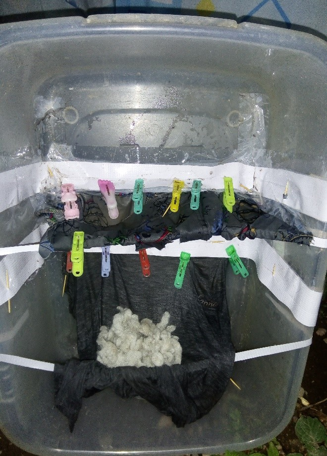
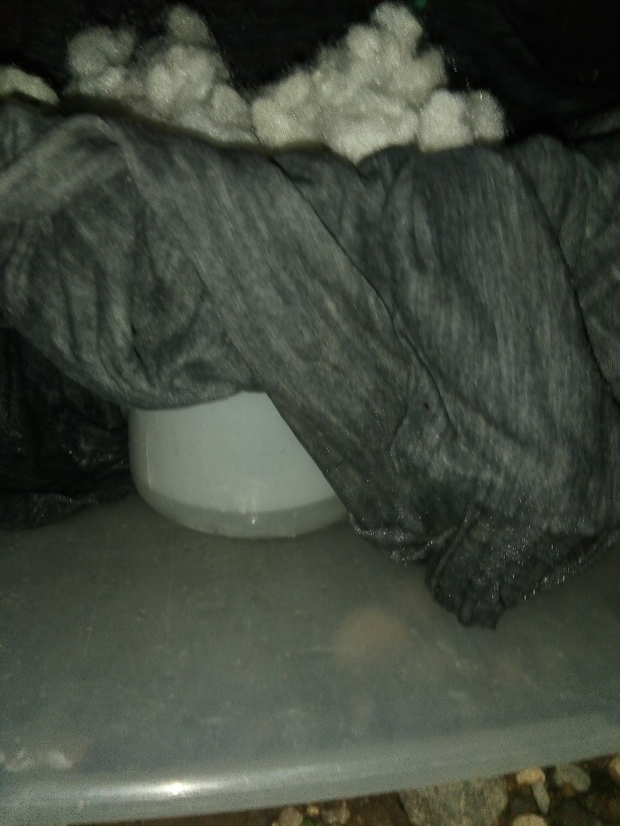
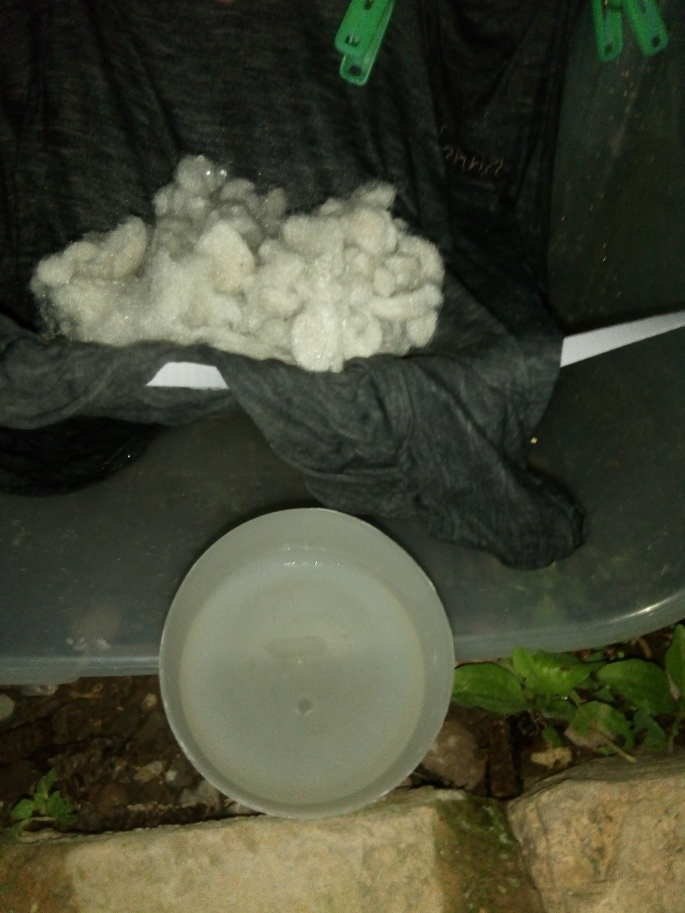

a. Problema de la investigación
En muchas partes del mundo, especialmente en áreas rurales y en países en desarrollo, el acceso a agua potable segura es un desafío significativo. Las tecnologías de purificación de agua convencionales pueden ser costosas de implementar y mantener, lo que limita su viabilidad en comunidades con recursos limitados. Además, algunos métodos de purificación pueden requerir una gran cantidad de energía o productos químicos, lo que puede ser insostenible o poco práctico en ciertos entornos.
b. Objetivos de la investigación
Objetivos generales:
Desarrollar soluciones efectivas y sostenibles de purificación de agua adaptadas a las comunidades rurales de Perú, con el fin de mejorar el acceso a agua potable segura y promover la salud y el bienestar de la población rural.
Objetivos específicos:
-Identificar los principales contaminantes presentes en las fuentes de agua utilizadas por las comunidades rurales de diferentes regiones de Perú, así como comprender las variaciones geográficas y estacionales en la calidad del agua.
-Evaluar la accesibilidad y aceptabilidad de las tecnologías de purificación de agua existentes en el contexto de las comunidades rurales de Perú, considerando factores como costos, facilidad de mantenimiento y compatibilidad cultural.
c. Justificación de la investigación
El acceso a agua potable segura es fundamental para la salud pública. En muchas comunidades rurales de Perú, la falta de acceso a agua limpia y segura contribuye a la propagación de enfermedades transmitidas por el agua, como diarrea, cólera y hepatitis, lo que resulta en altas tasas de morbilidad y mortalidad, especialmente entre niños y personas vulnerables. Además, Las comunidades rurales, especialmente en regiones montañosas o de difícil acceso, suelen tener menos acceso a infraestructuras de agua y saneamiento adecuadas en comparación con las áreas urbanas. Esto refleja desigualdades sociales y económicas que deben ser abordadas para promover la equidad y la justicia ambiental.
La tecnología de purificación de agua es fundamental para mejorar la salud y calidad de vida en comunidades rurales de Perú. Proporciona acceso a agua potable segura, reduciendo enfermedades y liberando recursos. Además, impulsa el desarrollo socioeconómico al mejorar la productividad agrícola y crear oportunidades económicas. También beneficia la educación y el desarrollo infantil al reducir las ausencias escolares. Esta tecnología protege el medio ambiente al reducir la contaminación de fuentes de agua naturales y promueve la resiliencia ante desastres naturales, garantizando acceso seguro incluso en emergencias.
a. Antecedentes
Se han desarrollado tecnologías de purificación de agua adaptadas a las comunidades rurales de Perú, centrándose en la simplicidad, bajo costo y accesibilidad. Esto incluye sistemas de filtración utilizando materiales locales como arena y carbón activado, tratamientos con energía solar como destilación solar y desinfección por radiación ultravioleta (UV), y el uso de materiales fácilmente disponibles para promover la sostenibilidad y reducir los costos de construcción y mantenimiento. Estas innovaciones buscan proporcionar soluciones efectivas y sostenibles para mejorar el acceso a agua potable segura en las áreas rurales de Perú.
b. Definición de términos básicos
1. Tecnologías de purificación de agua: Conjunto de métodos, procesos y sistemas diseñados para eliminar impurezas y contaminantes del agua, haciéndola segura para el consumo humano y otros usos.
2. Comunidades rurales: Poblaciones asentadas fuera de áreas urbanas densamente pobladas, caracterizadas por tener una baja densidad de población, una economía principalmente basada en la agricultura, ganadería u otras actividades primarias, y con acceso limitado a servicios básicos e infraestructura.
3. Acceso a agua potable segura: La disponibilidad de agua que cumple con los estándares de calidad establecidos para el consumo humano, libre de contaminantes y microorganismos patógenos que puedan representar un riesgo para la salud.
4. Desarrollo socioeconómico: Proceso de mejora en las condiciones de vida de una sociedad, que incluye el aumento de la riqueza, la mejora de la calidad de vida, la reducción de la pobreza y el acceso equitativo a recursos y oportunidades.
5. Equidad y justicia ambiental: Conceptos que se refieren a la distribución justa y equitativa de los beneficios y cargas ambientales entre diferentes grupos de población, especialmente en lo que respecta al acceso a recursos naturales y la exposición a riesgos ambientales.
6. Resiliencia ante desastres naturales: Capacidad de una comunidad o sistema para resistir, adaptarse y recuperarse de los impactos de eventos naturales adversos, como terremotos, inundaciones o sequías, minimizando así sus efectos negativos en la población y el medio ambiente.
c. Hipótesis
La implementación de tecnologías de purificación de agua adaptadas a las comunidades rurales de Perú resultará en una mejora significativa en la calidad del agua potable, lo que llevará a una reducción en la incidencia de enfermedades transmitidas por el agua y a una mejora general en la salud y el bienestar de la población rural.
a. MATERIALES:
1. Recipiente de plástico transparente. Se recomienda una botella grande de refresco carbohidratico o una caja transparente.
2. Prendas para vestir que contengan poliéster.
3. Una malla o colador.
4. En caso de necesitarlo, algodón de almohadillas.
5. Cintas adhesivas y decorativas.
6. Ganchos de ropa.
-Pegar la cinta adhesiva junto con una cinta decorativa y colocarlos en lugares señalados.
- Colocar las prendas de ropa en aquellos lugares señalados con cinta decorativas
- Colocar los ganchos para que queden firmes.
- Colocar el algodón encima de las prendas de vestir.
-El agua se verá purificada; sin embargo, existe incertidumbre por si es, en su totalidad, seguro para su consumo. Por lo que se recomienda hervir el agua para eliminar a posibles agentes extraños.
-De esta forma, se logra purificar el agua; aunque, aún no en su totalidad. Esta investigación, está centrada principalmente en encontrar soluciones a la contaminación de ríos, para que de esta forma se logré que su uso sea más seguro.
Se ha determinado que purificando el agua ayudara a mejorar la calidad de vida en el ser humano debido a que cuando se purifica el agua se eliminan residuos contaminantes y peligrosos para la salud como la oxidación de los tubos de hierro, agentes extraños como las bacterias, entre otros. Este proyecto sobre la purificación del agua fue de gran éxito debido a que se ha disminuido considerablemente la contaminación del agua como lo muestra el purificador de agua. En cuanto a la metodología utilizada se observó que con menos materiales y menos gastos para el bolsillo de la población era lo esencial de acuerdo a los recursos que se tenían en casa debido a esto se realizó un gran esfuerzo de investigación de modelos diferentes encontrados en el mercado y la combinación de cada uno de ellos. La idea era mejorar al doble la purificación, durabilidad y menos mantenimiento con pocos materiales y de bajo costo. Por ello se consideró que la metodología científica en muy esencial en el ser humano el cual todos forman parte de ella.
1. http://www.unwater.org/discover_es.html
2. http://es.wikipedia.org/wiki/Organizaci%C3%B3n_Mundial_de_la_Salud
3. http://es.wikipedia.org/wiki/Administraci%C3%B3n_en_salud
4. http://es.wikipedia.org/wiki/Agua
5. http://es.wikipedia.org/wiki/Agua#La_contaminaci.C3.B3n_y_la_depuraci.C3.B3n_del_agua
6. http://es.wikipedia.org/wiki/Calidad_del_agua
7. http://es.wikipedia.org/wiki/Agua#ONU_declara_al_agua_y_al_saneamiento_
derecho_humano_esencialhttp://es.wikipedia.org/wiki/Agua#ONU_declara_al_agua_y_al_saneamiento_
derecho_humano_esencial
  